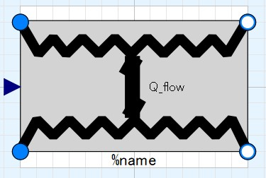
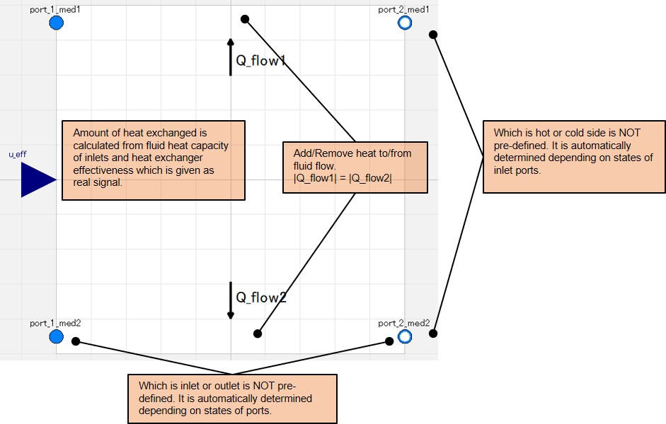
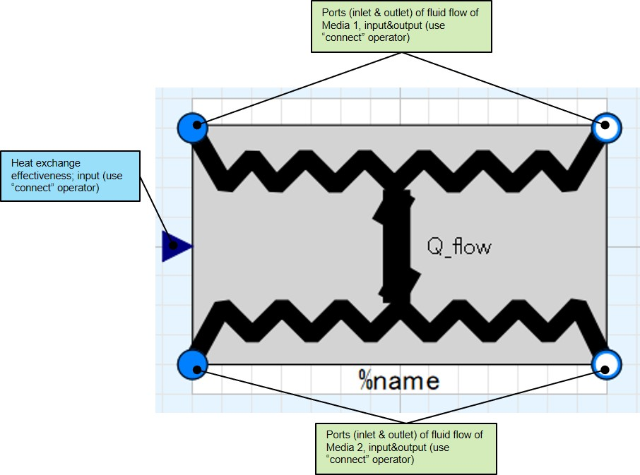

HX_modulatedEff00
icon:

Simplest heat exhchanger model which transfers heat from one fluid flow to another. Sum of heat and enthalpy is conserved.
Scope/Calculation function
- estimation of change of fluid states (enthalpy, temperature, internal energy) with given HX effectiveness.
- rough heat exchanger sizing/scaling if combinated with NTU-effectiveness equation outside of this component.
Short description of physical model/calculation method
- calculates maximum potential heat to be exchanged (Q_flow_max) from heat capacities of inlets.
- calculates actual heat exchanged from maxmum potential heat exchanged and given effectiveness.
- outlet states of fluids are calculated by heat conservation equations.
- either of Medium 1 or 2 can be hot/cold side. Which side is hot/cold is determined automatically.
- either of port 1 or 2 can be inlet/outlet side. Which side is inlet/outlet is determined automatically.

Limitations/Assumptions of model
- heat capacities are calculated referring to only INLET state. Maximum potential heat exchanged is NOT true if specific heat capacity varies over temerature or if phase change is included. (same definition of maximum potential heat exchanged as ordinary heat transfer textbook)
- no heat leak is considered.
- no heat soak (or thermal mass) is considered.
- 2 fluids never mix.
- pressure loss model is not included.
Interface

Parameters
NONE.
Usage
- redeclear the package of medium 1 and 2
- fill following connectors:
- port_1_med1
- port_2_med1
- port_1_med2
- port_2_med2
- u_eff
Warning/Causions
None
Demo models
***** under construction *****
Equations in details
***** under construction *****
Back to index page